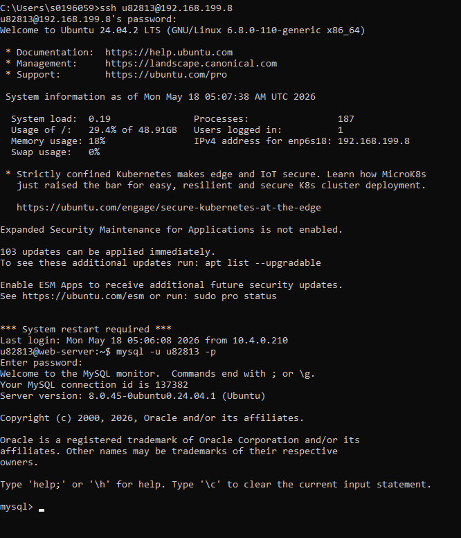
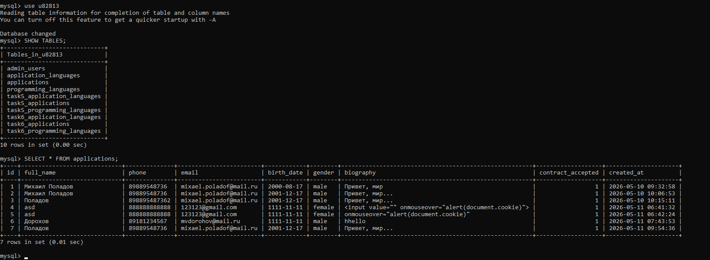

Заходим на учебный сервер, используя ssh, затем заходим в mysql

В mysql выбираем БД u82813 с помощью команды use.
Затем выведем существующие таблицы командой SHOW TABLES;
Покажем записи таблицы applications с помощью SELECT;
